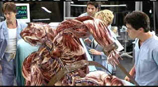

| Hollow Man
(SE)/B,A |
| Columbia/2000/113/ANA
1.85 |
Director Paul Verhoeven is one slick movie maker and makes Hollow
Man is a far better film than one might expect from the flimsy material. Verhoeven creates a
claustrophobic world dominated by the cloak of invisibility. Yes, this is another take on The
Invisible Man, the H.G. Wells novel that inspired a legion of films starting with the
outstanding 1933 James Whale take starring Claude Raines. Hollow Man barely changes the core
psychological material of the original and updates it with technology and colorful sets.
 |
| Beefing up. ©Columbia |
Deep below Washington, DC's streets a crack team of scientists led by
Sebastian Caine is delving into invisibility. They have found a way to disappear animals, but
bringing them back to flesh and blood is the missing link. Eccentric genius Caine plays around with
genetic code on his computer like a kid challenging a video game. It's not long before inspiration
pins the tale on the donkey and the adventure takes off.
Cloaking animals with invisibility is one thing, but this project must find out
if man can transform. Who will it be and how will this new found power affect the psyche of the
individual.
Hollow Man is a pretty good B film. Verhoeven’s crisp, snazzy
direction makes a huge difference in delivering the material. His slightly smutty center of gravity
works well for Hollow Man. No one can look up a skirt quite like Verhoeven, even when he has
his characters doing it for him. The action melds wonderfully with the special effects and it moves
at a no-nonsense pace.
Kevin Bacon is a good choice for Sebastian Caine. Bacon's on the edge charm and
cockiness prevent his character from being totally obnoxious. Elisabeth Shue gets to show off some good action instincts, calling up some of that energy
that infused early roles like Adventures in Babysitting with excellent charge.
Bacon in the buff may sound like a new wrap for
fired eggs, but in Hollow Man it's just another instance of the actor slipping into a part
for consummate comfort. After all, when Bacon goes "hollow" he does need to shed the
cloth to effectively disappear.
Look for brilliant reference images in Hollow Man. Clarity is
amazing with a breathtaking feeling of a three dimensional world. Details are immaculately
presented without the slightest evidence of edge enhancement. Rich accurate color fully
saturated complimented by deep blacks and outstanding shadow detail. Visual punch to spare. This is
one of the best-looking DVDs I have seen. The Dolby Digital 5:1 sound is sharply focused and
presents an exciting ambient space. Bass impact is tight.
The nicely balanced audio commentary includes director Paul Verhoeven, star
Kevin Bacon and writer Andrew Marlowe is the heart of this special edition. There is question and
answer between the commentators, which again adds to the level of information revealed. Another
commentary features composer Jerry Goldsmith giving his insights into how to create a score for a
film. Goldsmith has done some of the best. Several deleted scenes, an HBO making of and a
number of short featurettes make up the balance of the excellent special edition.
|
|
|
|

Starship Troopers/A-,A

A great, modern, war movie that skewers genre conventions. Director Paul Verhoeven controls
the Scifi flick with a perfect flight plan.

Selections from the Feature Archive
include articles on Akira Kurosawa, Frank
Darabont, Blonde Bimbos, Hollywood Street Gangs, or Vietnam: The
Hollywood Pariah, and many more....
A Western is a Western is a Western

Place or time it's still a Western from John Ford's Drums
Along the Mohawk to John Sturges' Bad Day at Black Rock.
 
DVDPlanet is the DVD
incarnation of legendary laser retailer Ken Crane's. Deep discounts and serious service.
 ETEKNet is the web's only 24-hour, totally FREE source for all your home theater,
DVD, Dreamcast, PC, and Networking tech support needs! ETEKNet is the web's only 24-hour, totally FREE source for all your home theater,
DVD, Dreamcast, PC, and Networking tech support needs!

First Run Features boasts a library of independent and foreign features available on DVD
and VHS. Check out their web site for catalog details.

The
Movie Poster Archive include extensive poster images from the films of stars like Susan Hayward,
Kirk Douglas, Katharine Hepburn and many more. Our featured star is Burt Lancaster. |